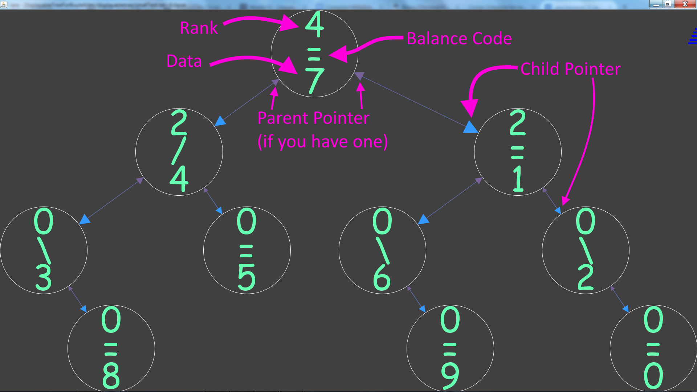
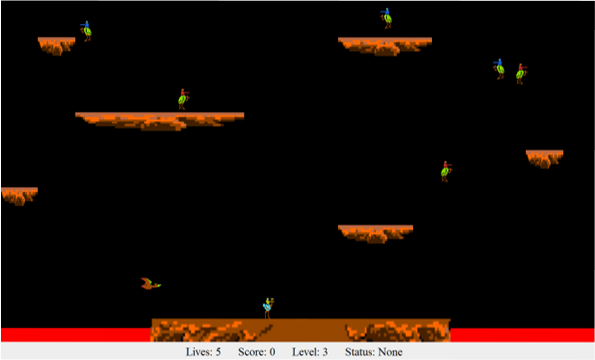
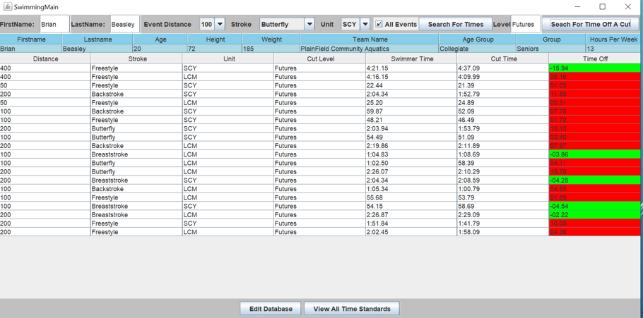
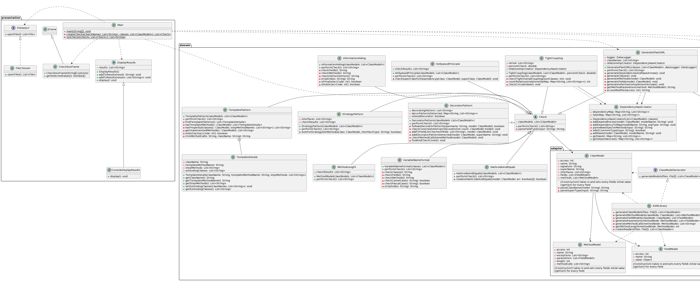

Portfolio
-
Editor Trees
Implemented an efficient, self-balancing AVL tree using rank to act as a text editor
-
Joust Arcade Game
Created a version of the joust arcade game in Java while adhering to object-oriented design principles
-
Swimming Information Database
Constructed a database to keep track of individual swimmer times, time standard cuts, records, and individual swimmer achievements
-
Java Linter
Designed and implemented the software architecture for a Java Linter to recognize design principles and patterns